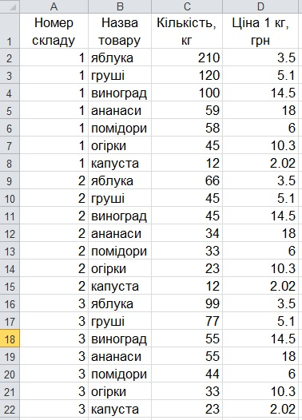
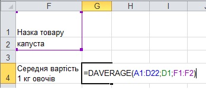
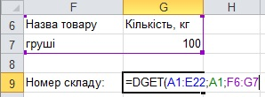
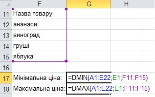

Вправа 5.5. Створення запитів
У цій вправі ви маєте опрацювати таблицю з інформацією про зберігання овочів та фруктів на складах. За допомогою функцій табличного процесора необхідно знайти:
- середню вартість вибраного користувачем типу товару;
- номер складу, на якому залишок груш становить 100 кг;
- найвищу та найнижчу ціну 1 кг фруктів.
- Відкрийте файл Впрaва_5_5.xlsx з архіву заготовок або самостійно створіть таку таблицю, як на рис. 5.47.

Рис. 5.47. Таблиця з вихідними даними - Для визначення середньої вартості товару в клітинки F1:F2 введіть критерій відбору, у клітинку F4 — текст Середня вартість 1 кг овочів, а у клітинку G4 — функцію DAVERAGE(база_ даних; поле; критерій) (рис. 5.48). Аргументи функції будуть такими:
- база_даних — вся вихідна таблиця, тобто діапазон А1:D22;
- поле — заголовок того стовпця, за значеннями якого обчислюватиметься середнє значення, тобто D1;
- критерій — діапазон клітинок, у яких записано критерій відбору об'єктів, тобто F1:F2.

Рис. 5.48. Визначення середньої вартості товару - Уводячи у клітинку F2 різні назви овочів, пересвідчіться, що в клітинці G4 обчислюватимуться значення їх середньої вартості.
- Для пошуку складу, на якому є залишок груш у кількості 100 кг, у клітинки F6:G7 введіть критерій відбору, а нижче, у клітинку G9, — функцію DGET (рис. 5.49). У даному випадку критерій можна сформулювати зі сполучником «і»: назва товару — груші і кількість — 100 кг. Тому умови критерію запишіть в одному рядку.
У результаті ви маєте отримати номер складу 1.
Рис. 5.49. Застосування функції DGЕТ - Фрукти — це ананаси, виноград, груші та яблука. Отже, для пошуку їх найнижчої та найвищої ціни критерій відбору можна сформулювати так: назва товару — це ананаси, або виноград, або груші, або яблука. Уведіть цей критерій у клітинки F11:F15, а нижче введіть функції DМАХ та DМІN для обчислення максимальної та мінімальної ціни (рис. 5.50). Збережіть електронну книгу.

Рис. 5.50. Застосування функцій DMIN і DMAX - Самостійно модифікуйте виконаний у п. 2 пошук середньої вартості товару так, щоб визначалася середня вартість двох зазначених користувачем товарів.